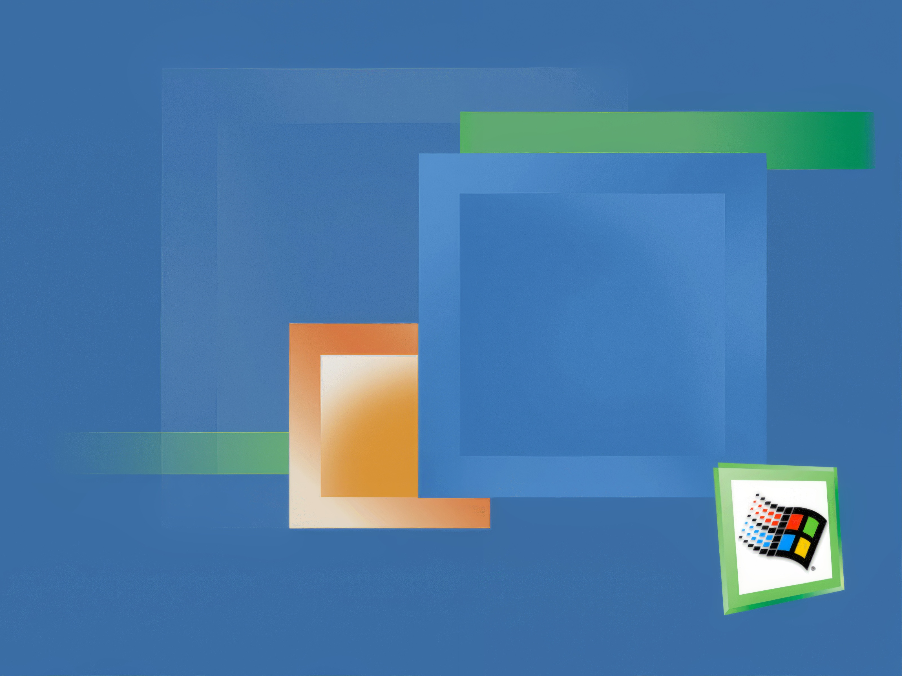
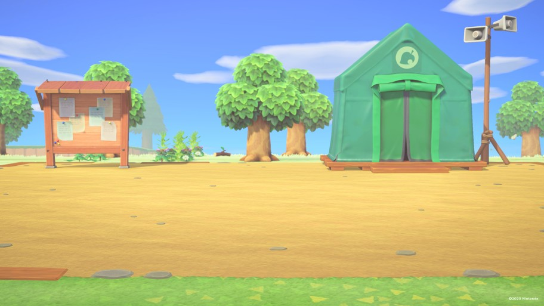
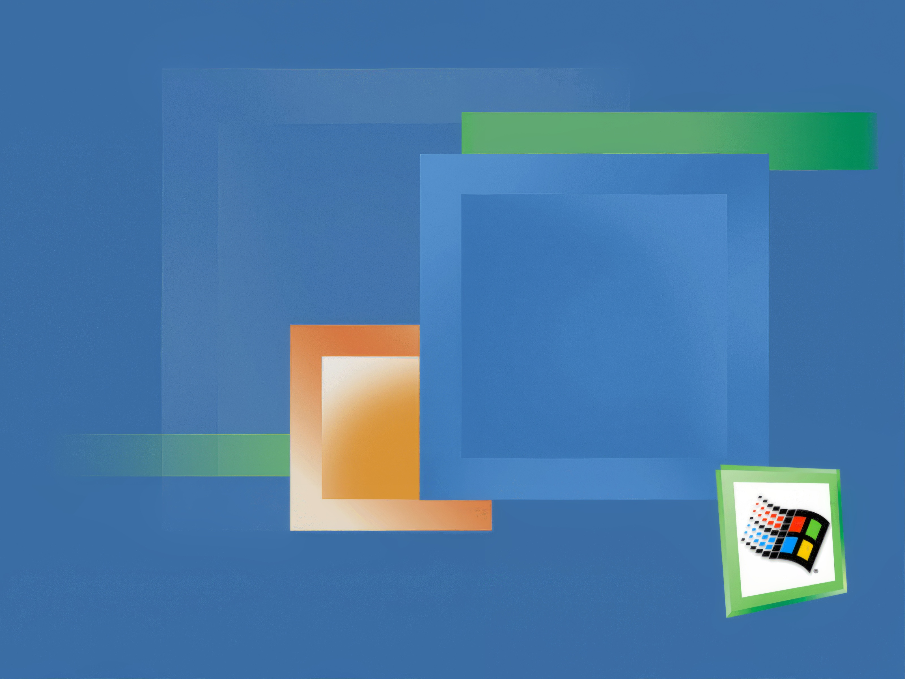
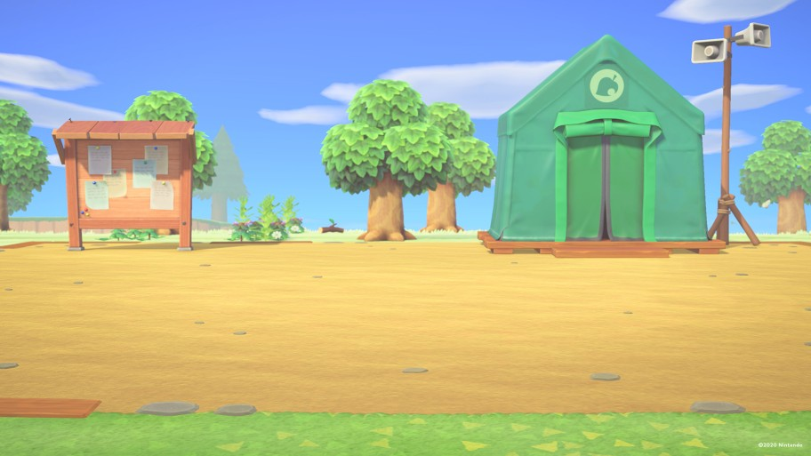

Game Director
Future Machine
Hobby Royale is the latest work to my fictional game studio called the Purple Lunchbox Productions. the game is all about making hobbies fun to understand, and a little bit of battle makes them look more spicy! hope this game helps you delve into your true interests, and you, my mate, shall continue your journey.
Shoutout to my 2017 self for starting them all!
[Placeholder line 1]
[Placeholder line 2]

 


